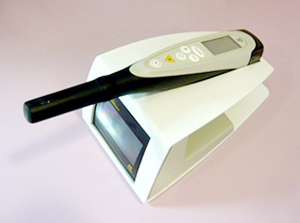

079-562-8471
079-562-8471- Home
- こだわりの設備を用いた治療・院内技工
安心の設備をご紹介しますEquipment
兵庫県神戸市三宮の歯医者「北野坂鳥居歯科医院」では、一人ひとり異なる患者様のご要望にお応えし、できるだけ負担を抑える治療をご提供するため、さまざまな設備を整えています。そして治療で装着する詰め物や被せ物、入れ歯などを院内でつくっています。こちらでご紹介するのは、安心で安全な診療をご提供するための院内設備と歯科技工室です。
院内設備
デジタルデンティストリー
お口まわりの情報をデータ化して把握し、診査・診断、そして治療計画の作成や装置の作製も行えるシステムを導入しています。それが、シロナコネクトです。精度の高い治療のために、レーザースキャンで印象データを取得し、データですぐに立体画像を構築して、診査・診断・治療計画を立てます。さらに、そのデータを自動で人工歯を削り出す歯科技工室に送って、人工歯を作製することができます。
マイクロスコープ（歯科用顕微鏡）
マイクロスコープとは、歯科用顕微鏡です。肉眼で見るよりも2倍から24倍に拡大して患部を見ることができます。また、影になって見えにくい部分も明るく照らすので、精度の高い治療が可能です。
当院では2台のマイクロスコープを完備し、その1台は老舗メーカー「カールツァイス」のマイクロスコープです。ルーペでは確認しにくい部位も立体的に、そして広視野に把握しながら処置できるうえ、接眼レンズの活用により微細部位まで確認できるので精度の高い治療が可能です。インプラント治療などの、とくに高い精度が求められる治療に活用します。
サージテル（歯科用拡大鏡）
一般的なサージテルは2～4倍に拡大しますが、当院のサージテルは10倍まで拡大できるタイプで、ライトつきです。患部を明るく照らしながら拡大して、さまざまな処置ができるので高精度な治療が可能です。
クリスタルアイ（歯の色の判定機）
微妙な色判定が可能な器具がクリスタルアイです。シェードガイド（歯の色の見本）を使い、見くらべて判定をするのとは異なり、歯の色のデータを取得したあと大画面のスクリーンで確認し、自然な歯の色を決定します。そして、実際に人工歯をつくる歯科技工室にデータを送ることができ、自然な色調の再現につながるのです。
ダイアグノデントペン（虫歯診断器）

レーザーの光を当てて、虫歯になっているかどうかを数値であらわす検診機器です。目視では分かりにくい、被せ物の中の虫歯やエナメル質の内側に広がる虫歯なども検知できます。歯を削る前に正確な情報が得られるので、歯を削る量を抑えられます。
デンティスター（歯科治療器具洗浄器）
歯科治療で使用する器具を洗浄する機器です。とくに、ハンドピースは筒状なうえ内部が複雑な形状なので汚れが入り込みやすいため、しっかりと消毒しなければなりません。院内感染予防の一環としてさまざまな設備を活用し、衛生管理を徹底しています。
ドックスベストセメント
虫歯に汚染された歯質を削り取るのではなく、薬剤を詰めてミネラルで殺菌する虫歯治療システムです。これまでは歯の中の神経を取らなければならなかったような虫歯も、ドックスペストセメントを活用することで神経を残すことができる場合があります。
アネジェクト（電動麻酔器）
麻酔注射の注入速度や注入量を一定にコントロールして、注射の痛みを軽減するのが電動麻酔器です。手動の注射のときに起こりがちな「圧痛」を抑えます。
口腔外バキューム

歯の治療の際に発生する虫歯や金属、プラスチックの削りカスや血液や唾液を飛散させないように口元で吸引する装置です。細かい粉塵は目には見えませんが、吸い込むと人体に悪影響をおよぼすおそれがあるので注意が必要です。
AED
心臓の不具合はいつどこで起こるか分かりません。心機能の調子が悪くなったときに、すぐに対応できるように、当院ではAEDを設置しています。
院内歯科技工室
北野坂鳥居歯科医院では、精度の高い人工歯をご提供するために、院内で作製できるように院内技工室を併設し、つねに歯科技工士が在籍し作業しています。専属の歯科技工士は2名です。
院内歯科技工室のメリット
一般的な歯科医院には院内歯科技工室はありませんので、外部の技工所に詰め物や被せ物、入れ歯の作製や調整、修理を依頼します。そうすると発注から人工歯の作製、そして歯科医院への納品までにはある程度の時間がかかります。
しかし院内に歯科技工室があると詰め物や被せ物の作製期間の短縮につながり、さらに人工歯についての詳細な情報を伝えやすいので、依頼通りの人工歯の作製がしやすくなるのです。
患者様にとってのメリット
院内技工室には歯科技工士が在籍しています。そのため患者様に直接お会いすることができるので、お顔の特徴や雰囲気が分かったうえで、人工歯の作製ができます。雰囲気に合わせて、少し丸みを加えて優しさを醸し出したり、直線的にして実直さや威厳を加えたりが可能です。また患者様が直接、歯科技工士とコミュニケーションを取ることができるので、歯の色などの好みを直接伝えることもできます。
また、ほかの歯科技工所に依頼すると発注、集配、作製、そして配送などの手順を踏むので、ある程度の作製期間がかかります。しかし院内に歯科技工室があれば、集配や配送の手間が省けます。またかんたんな修復は少しお待ちいただくだけで、仕上げられることもあるのです。
歯科技工士紹介
歯科技工士竹内 葵Aoi Takeuchi
- 三重県立明野高等学校 卒業
- 新大阪歯科技工士専門学校 卒業
はじめまして。北野坂鳥居歯科医院の歯科技工士の竹内葵と申します。
院内や技工室にて、お口の中を直接撮影して、歯の形を直接読み込む口腔内カメラや患者様の歯の模型を読み込む装置でコンピュータ上に3次元の形を写し出し、特殊な専用プログラムで詰め物や被せ物の形をデザインいたします。難しい咬合の方の場合は、咬合をデジタルで読み込む装置(si-cat function)を使い、被せ物の形を正確に反映させます。これはインプラント治療、設計時に使う装置です。
被せ物や詰め物に使う材料は種類が多く、ジルコニア、2ケイ酸リチウム 長石系セラミックス、ハイブリッドレジンなどです。色合いに関しては、患者様独自の歯の色をマルチスペクトルカメラにて測定し、各材料のグラディエーションを踏まえて、セラミックスを焼いて固くする前の状態で色材料を浸透させる方法を駆使します。さらに、各種セラミックス専用炉（ジルコニア専用炉、e-max専用炉）を使い、正確で迅速な焼成（セレックスピードファイヤ）を可能にしています。
また、精密な歯をつくる場合、プラスチックでプロビジョナル（テスト歯）をつくるのが一般的ですが、私たちは、プラスチックではなく、セラミックスを使って、精密な色や形態のプロビジョナルを作製します。
当院では、患者様の歯の色調、形、咬合の機能、納期などに関する多様なニーズにお応えできるよう、さまざまな機器と技術を用いて、私ともう一名の技工士オペレーターが可能なかぎり対応いたします。
 WEB予約
WEB予約